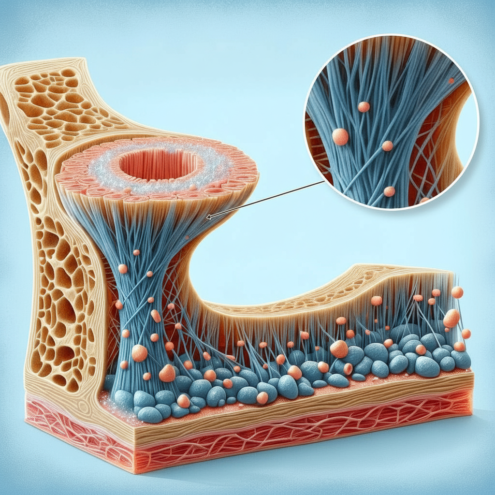
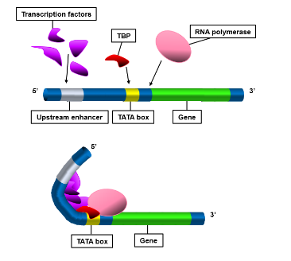

재생 의학 관점에서의 류마티스 관절염에 대한 자가면역치료 적용
탐구 주제: 류마티스 관절염의 자가면역치료
탐구 대상: 류마티스 관절염 치료법
재생 의학은 사람의 신체 기능을 정상적으로 회복시키기 위해 손상된 세포, 조직, 장기를 대체하거나 재생시키는 첨단 의료 분야이다. 이는 단순히 질병의 증상을 완화하는 전통적인 치료법에서 벗어나 생체 구조를 근본적으로 복구하여 질환을 완화하거나 완치하는 것을 목표로 한다.
주요 핵심 기술로는 자가 복제 능력을 지닌 줄기세포 치료, 생분해성 재료를 활용해 조직의 성장을 돕는 조직 공학, 그리고 유전적 결함을 수정하는 유전자 치료 등이 있다.
최근에는 3D 바이오 프린팅 기술과 접목되어 인공 장기를 제작하는 수준까지 발전하고 있으며 과거에는 치료가 불가능했던 난치성 질환이나 만성 퇴행성 질환을 해결할 수 있는 미래 의학의 핵심으로 평가받고 있다.
연결 부위의 안정성을 확보하기 위해 콜라겐 섬유 간 결합을 강화하여 인장강도를 높이는 방법을 제안한다.

특히 콜라겐 교차결합을 촉진하는 라이실 산화효소(lysyl oxidase)의 발현을 증가시키는 것이 핵심이다.

이를 위해 인핸서(enhancer) 서열을 조작하여 전사인자의 결합을 유도하면 RNA 중합효소의 작용이 증가하고, 결과적으로 해당 효소의 발현량을 극대화할 수 있다.
이 과정은 콜라겐 섬유 간 결합을 더욱 단단하게 만들어 척추 연결부의 구조적 안정성을 향상시킨다.
---인간의 대뇌 운동피질은 두 발 보행과 정밀한 손 동작에 최적화되어 있다. 반면 말의 하체는 척수 반사 회로와 보행 생성기(CPG)에 의해 제어된다.
이 두 신경계를 단순히 연결할 경우 운동 명령이 충돌하여 보행 중 협응 장애나 균형 붕괴가 발생할 가능성이 높다.
HOX 유전자는 배아 발생 과정에서 신체 축을 따라 각 부위의 위치를 결정하는 ‘좌표 유전자’로 작용한다.
척수의 각 구간에서 HOX 유전자 발현 패턴이 달라짐에 따라 신경세포의 축삭이 연결되는 경로가 결정된다.
이 원리를 활용하여 HOX 발현 영역을 재배치하면, 인간 상체의 운동 신호가 말의 하체 운동 회로와 자연스럽게 연결되도록 신경 경로를 재구성할 수 있다.
이를 통해 인간의 운동피질에서 생성된 신호가 보행 생성기를 거쳐 다리 근육으로 전달되는 하이브리드 신경 제어 시스템을 구축할 수 있다.
---인어와 같은 구조는 생물학적으로 실현 가능성이 낮지만, 켄타우로스의 경우 구조적 보완과 유전적 재설계를 전제로 한다면 이론적 수준에서의 가능성을 논의할 수 있다.